- Armatex
- Прес-фітинги
- Заглушка 6301
Besco · Gutpress Copper, профіль M · вода
Заглушка, мідний прес, профіль M 6301
Заглушка з лінії Gutpress Copper, профіль M · вода: 10 розмірів від 12 × 12 до 76 × 76 мм. Застосування: вода, опалення, промисловість. Стандарт EN 1254-7.
- Розміри
- 10
- Тиск
- 16 бар
- Температура
- −10…110 °C

Розміри та номери артикулів
Джерело: каталог Besco 2026| Розмір | Номер артикулу | Мішок | Коробка | Кількість для запиту |
|---|---|---|---|---|
| 12 × 12 | 684101212 | 10 шт. | 350 шт. | |
| 15 × 15 | 684101515 | 10 шт. | 60 шт. | |
| 18 × 18 | 684101818 | 10 шт. | 50 шт. | |
| 22 × 22 | 684102222 | 10 шт. | 50 шт. | |
| 28 × 28 | 684102828 | 10 шт. | 40 шт. | |
| 35 × 35 | 684103535 | 5 шт. | 60 шт. | |
| 42 × 42 | 684104242 | 5 шт. | 50 шт. | |
| 54 × 54 | 684105454 | 5 шт. | 25 шт. | |
| 67 × 67 | 684106767 | 1 шт. | 10 шт. | |
| 76 × 76 | 684107676 | 1 шт. | 5 шт. |
- Лінія
- Gutpress Copper, профіль M · вода
- Застосування
- вода, опалення, промисловість
- Норма
- EN 1254-7
- Допуски
- DVGW WRAS RISE PZH
- Назва в каталозі
- Cap End

Запит ціни: Заглушка 6301.
Додайте розміри до списку кнопкою «Додати» або одразу напишіть нам. Гуртові ціни, наявність і терміни підготуємо протягом одного робочого дня.
Інші продукти в лінії
Шукати в лінії Gutpress Copper M · вода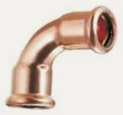
Відвід 90° i/i 6002 · 14 розм.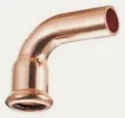
Відвід 90° i/a 6001 · 11 розм.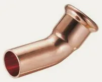
Відвід 45° i/a 6040 · 11 розм. Відвід 45° i/i 6041 · 11 розм.
Відвід 45° i/i 6041 · 11 розм.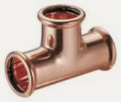
Трійник рівнопрохідний 6130 · 11 розм.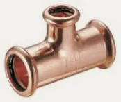
Трійник редукційний 6130R · 44 розм. Муфта редукційна i/i 6240 · 18 розм.
Муфта редукційна i/i 6240 · 18 розм. Перехідник i/a 6243 · 28 розм.
Перехідник i/a 6243 · 28 розм. Муфта 6270 · 11 розм.
Муфта 6270 · 11 розм. Муфта ковзна 6271 · 8 розм.
Муфта ковзна 6271 · 8 розм.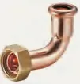
Напівамериканка кутова 90° C6002G · 1 розм. Напівамериканка з ВР C6359G · 1 розм.
Напівамериканка з ВР C6359G · 1 розм. Обвідне коліно i/i 6085 · 4 розм.
Обвідне коліно i/i 6085 · 4 розм.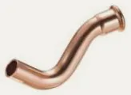
Обвідне коліно i/a 6086 · 4 розм.Фланець з прес-кінцем PN 16 6510 · 4 розм.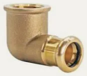
Коліно 90° з ВР 6090G · 5 розм.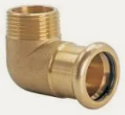
Коліно 90° з ЗР 6092G · 5 розм. Коліно настінне з ВР 6472G · 2 розм.
Коліно настінне з ВР 6472G · 2 розм.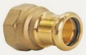
З'єднувач з ВР 6270G · 16 розм. З'єднувач з ЗР 6243G · 20 розм.
З'єднувач з ЗР 6243G · 20 розм. Трійник з ВР 6130G · 18 розм.
Трійник з ВР 6130G · 18 розм.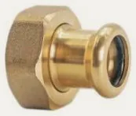
Напівамериканка з ВР 6359G · 6 розм. Американка з ЗР (плоске ущільнення) 6331G · 6 розм.
Американка з ЗР (плоске ущільнення) 6331G · 6 розм.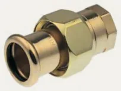
Американка з ВР (плоске ущільнення) 6330G · 6 розм.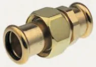
Американка press × press (плоске ущільнення) 6330 · 6 розм.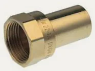
З'єднувач з ВР 6281 · 7 розм. З'єднувач з ЗР 6280 · 6 розм.
З'єднувач з ЗР 6280 · 6 розм.